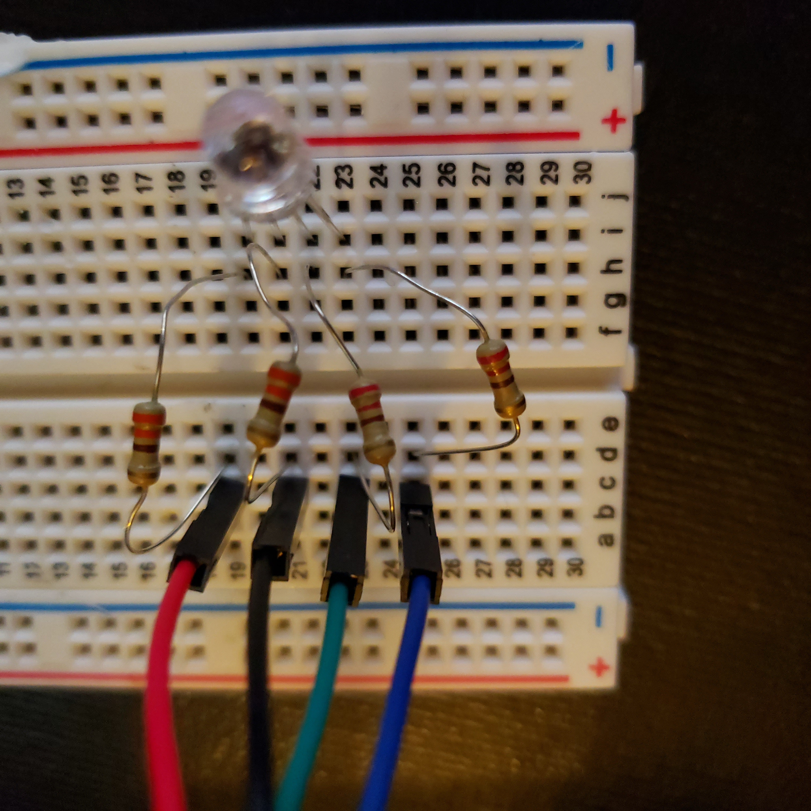
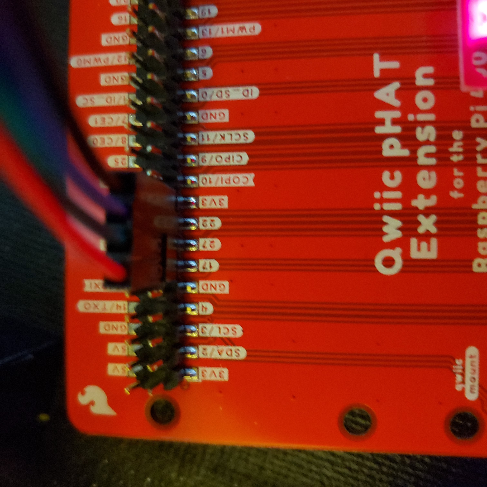

Multi-color LED
Contents
Multi-color LED#
Getting started#
For this exercise, you will need the following:
Raspberry Pi 400 computer
Sparkfun Qwiic pHAT Extension
One multi-color LED
Four M-to-F Jumper Wire (1 Black, 1 Red, 1 Green, 1 Blue)
Four 330 Ohm resistor
Connecting the LED#
With the pHAT already connected (See Blinking LED Lesson above):
View the multi-colored LED, the longest pin is the anode. LED LESSON ON LED CATHODE/ANODE
The other pins represent RGB, respectively, so we read the pin as follows: Red, Anode, Green, Blue. We will have the jumper wires complement each pin color for easier coordination, we will also line up these pins on the GPIO pins.
Install RGB-LED.
Insert anode vertically into the Column I, Row 21.

Gather your resistors to allow a steady current for our LED.
Insert either end of the resistor into the Column H, Row 20.
Bridge the gap of the breadboard with the resistor, and insert the other end into Column D, Row 19.
We will continue adding resistors for the anode, green, and blue pins.
For the anode, insert either end of the resistor into Column H, Row 21, and the other end into Column D, Row 21.
For the GREEN pin, insert either end of the resistor into Column H, Row 22, and the other end into Column D, Row 23.
Finally, for the BLUE pin, insert either end of the resistor into Column H, Row 23, and the other end into Column D, Row 25.
Collect your M-to-F Jumper Wires.
This step will connect the anode, the resistor is to make sure the 3V does not wear out the LED.
With your Black M-to-F Jumper Cable, attach the FEMALE end into the 3V pin of the pHAT
Attach opposing side (Male end) and insert into Column C, Row 21 of the breadboard.
We will continue adding M-to-F Jumper Wires for the Red, Green, and Blue pins.
Insert Male pin of RED wire into Column C, Row 19, attaching the opposite end to Pin 17 of the pHAT.
Insert Male pin of GREEN wire into Column C, Row 23, attaching the opposite end to Pin 27 of the pHAT.
Insert Male pin of BLUE wire into Column C, Row 25, the opposite end will be attached to Pin 22 of the pHAT.

Write a Python 3 program#
Follow the instructions in the previous lesson, open the Thonny Python IDE, and copy and paste the following code into it.
```python
#libraries
import RPi.GPIO as GPIO
from time import sleep
#disable warnings (optional)
GPIO.setwarnings(False)
#Select GPIO Mode
GPIO.setmode(GPIO.BCM)
#set red,green and blue pins
redPin = 17
greenPin = 27
bluePin = 22
#set pins as outputs
GPIO.setup(redPin,GPIO.OUT)
GPIO.setup(greenPin,GPIO.OUT)
GPIO.setup(bluePin,GPIO.OUT)
def turnOff():
GPIO.output(redPin,GPIO.HIGH)
GPIO.output(greenPin,GPIO.HIGH)
GPIO.output(bluePin,GPIO.HIGH)
def white():
GPIO.output(redPin,GPIO.LOW)
GPIO.output(greenPin,GPIO.LOW)
GPIO.output(bluePin,GPIO.LOW)
def red():
GPIO.output(redPin,GPIO.LOW)
GPIO.output(greenPin,GPIO.HIGH)
GPIO.output(bluePin,GPIO.HIGH)
def green():
GPIO.output(redPin,GPIO.HIGH)
GPIO.output(greenPin,GPIO.LOW)
GPIO.output(bluePin,GPIO.HIGH)
def blue():
GPIO.output(redPin,GPIO.HIGH)
GPIO.output(greenPin,GPIO.HIGH)
GPIO.output(bluePin,GPIO.LOW)
def yellow():
GPIO.output(redPin,GPIO.LOW)
GPIO.output(greenPin,GPIO.LOW)
GPIO.output(bluePin,GPIO.HIGH)
def purple():
GPIO.output(redPin,GPIO.LOW)
GPIO.output(greenPin,GPIO.HIGH)
GPIO.output(bluePin,GPIO.LOW)
def lightBlue():
GPIO.output(redPin,GPIO.HIGH)
GPIO.output(greenPin,GPIO.LOW)
GPIO.output(bluePin,GPIO.LOW)
while True:
turnOff()
sleep(1) #1second
white()
sleep(1)
red()
sleep(1)
green()
sleep(1)
blue()
sleep(1)
```
The following are examples of the LED lighting up yellow, purple, and light blue using the provided code.